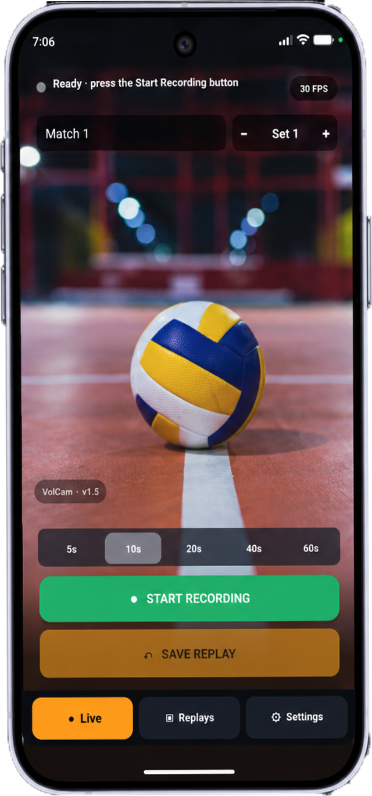
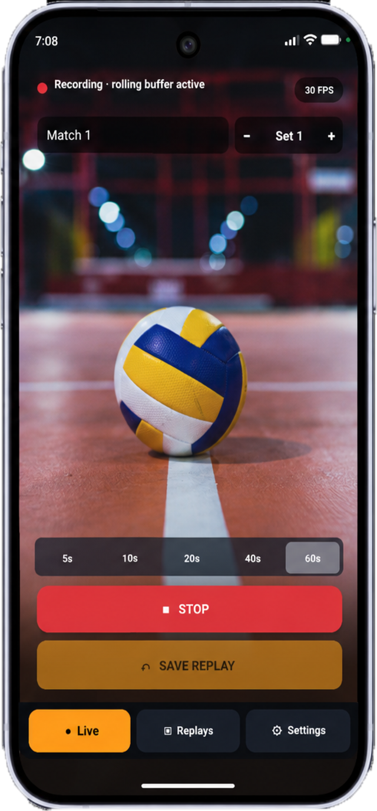
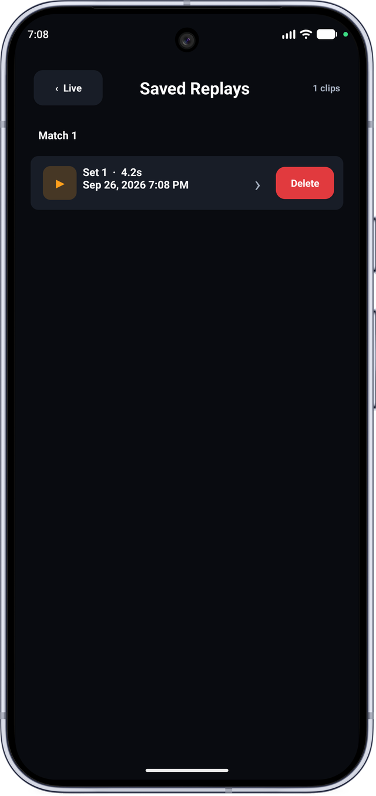

Challenge the call with a replay. Mount your phone courtside and catch the moment before the whistle.



VolCam turns your phone into a practical volleyball video-challenge camera. Mount it securely near the court, start recording, and save the moments right before a possible violation — no cloud, no upload, just the replay you need.
Choose a replay length of 5, 10, 20, 40, or 60 seconds to match the call you're checking.
VolCam keeps a temporary rolling buffer, automatically clearing older footage to control storage use.
Tap Save Replay and only the selected portion is kept — everything else is discarded.
Saved replays stay inside the app's Documents folder. Review tools include slow playback, exact frame stepping, scrubbing, pinch zoom, and a yellow drawing overlay to mark the line.
⬇ Download (APK)VolCam v.1.0 is the first beta build, focused on getting a reliable courtside replay camera into your hands. Expect fast iteration — send feedback below and it goes straight into the next patch.
Beta testing is limited to Android devices with the APK installed manually. Bug reports with your device model help the most.
VolCam uses your device camera to record video for replay review. Recordings are processed and stored locally on your device, inside the app's own Documents folder.
VolCam does not upload your recordings, does not require an account, and does not transmit video off your device. No footage is sent to Lomisoup or any third party.
VolCam does not integrate any analytics, advertising, or third-party tracking SDKs in this beta build.
If you email feedback or bug reports, we only use it to improve VolCam and will not share it outside Lomisoup.
As VolCam is in active beta, this notice may change between versions. Check this page for the latest copy.
Questions about this notice: lomisoupgaming@gmail.com